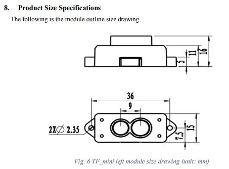

Robotique : mesure de distance¶
- Auteur
J.Soranzo
- Date
Novembre 2019
- Societe
VoLAB
- Entity
VoRoBoTics
Table des matières Mesure de distance
Lidar¶
LIDAR tournant¶
Chez DF-Robot : 99$ (prix au 2/3/20) A1-M8 DF ROBOT 1
LIDAR tournant Home made¶
Homemade LIDAR sensor with Arduino 5 & Processing sur Youtube
Le site qui va avec la vidéo 6
Lidar HOMEMADE Tournant à partir d’un VL53LX0, ARDUINO UNO, connecteur tournant et capteur à effet HALL
Une autre vidéo sur un lidar tournant home made
Open Simple Lidar 7 : Making map of the rooms
Hakaday.io 8 et github 9 dans les commentaires de la vidéo
Application PC développée en C# dans le code est foruni sous github ! Merci à lui.
Utilise un capteur TSL1401 assez original ! Full instruction provided !!!!
Les fixes (Plus près des TOF)¶
LIDAR lite v3HP 3 150USD sans les frais de port 216€ chez ali - interface I2C
LIDAR-Lite V3 179€ chez Go-Tronic 4
Range 4cm à 40m !
Spread of the beam: Distance/100 = beam diameter at that distance Environ 1/2 ° ou 8 milliradian
La série des TF de chez Benewake
TF mini : 27.33€ Banggood 10 (en promo): FOV 2.3° max 12m
{kind=link}
TF-mini plus: 41.16€ chez ali FOV 3.6° 0.1 à 12m

TF-03 : 0.1 à 100m FOV 0.5° Prix 408.76€ banggood et 190€ chez Robotshop 11 …
76€
Un Lidar à 30€ 12 exemple d’utilisation très complet sur le site de ROS 13
Capteur ToF¶
GY-530 VL53L0X Banggood 14 9.27€
I2C : gros inconvénients : il faut fixer sons adresse par soft à chaque démarrage ! Si on en veut plusieurs sur le bus.
FOV de 25°C
TOF10120 15 10.8€+3.91€ de FdP chez aliExpresse ou 8.19€ chez Banggood ou encore 4.73€ chez CDiscount 16 FdP ?
10 à 180cm, UART et I2C
Un exemple d’utilisation sur Hackster.io 17
void SensorRead(unsigned char addr,unsigned char* datbuf,unsigned char cnt)
{
unsigned short result=0;
// step 1: instruct sensor to read echoes
Wire.beginTransmission(82); // transmit to device #82 (0x52)
// the address specified in the datasheet is 164 (0xa4)
// but i2c adressing uses the high 7 bits so it's 82
Wire.write(byte(addr)); // sets distance data address (addr)
Wire.endTransmission(); // stop transmitting
// step 2: wait for readings to happen
delay(1); // datasheet suggests at least 30uS
// step 3: request reading from sensor
Wire.requestFrom(82, cnt); // request cnt bytes from slave device #82 (0x52)
// step 5: receive reading from sensor
if (cnt <= Wire.available()) { // if two bytes were received
*datbuf++ = Wire.read(); // receive high byte (overwrites previous reading)
*datbuf++ = Wire.read(); // receive low byte as lower 8 bits
}
}
Le composant au dos est 3AQ20 : Nuvoton 1T 8051-based Microcontroller N76E003 18 donc en fait on ne sait pas les registres I2C mise à part cet exemple ci-dessus.
Malgrés tout mes efforts, je n’ai pas réussi à retrouver la datasheet du TOF10120 pour avoir la doc complète de l’I2C tout au plus un truc ressemblant 19 dans datasheet library :-(
Weblinks¶
- 1
- 2
- 3
- 4
https://www.gotronic.fr/art-capteur-de-distance-lidar-lite-v3-25437.htm#complte_desc
- 5
- 6
- 7
- 8
https://hackaday.io/project/20628-open-simple-lidar#menu-description
- 9
- 10
- 11
- 12
- 13
- 14
- 15
- 16
- 17
https://www.hackster.io/SurtrTech/tof-10120-laser-rangefinder-to-measure-distance-lcd-9e549a
- 18
https://datasheet.lcsc.com/szlcsc/Nuvoton-Tech-N76E003AQ20_C90832.pdf
- 19
https://drive.google.com/file/d/1uaMZ421smI0FN40iJgn-ZKQG42KUvFfh/view